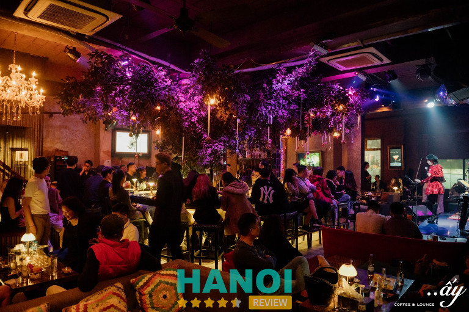
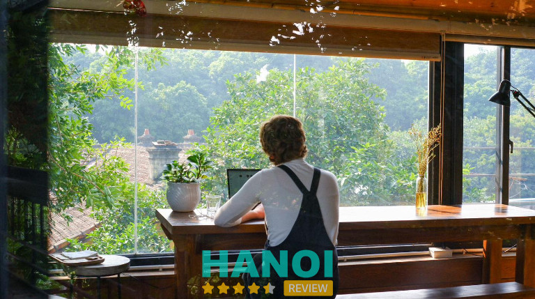
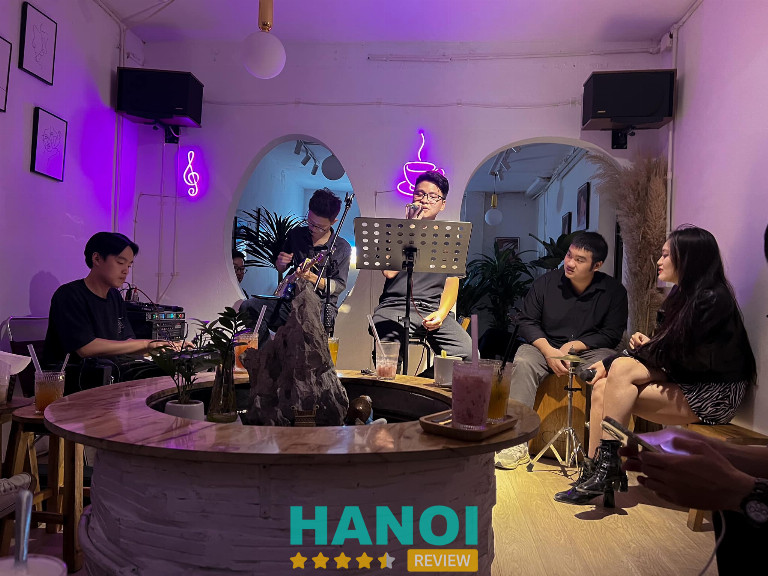
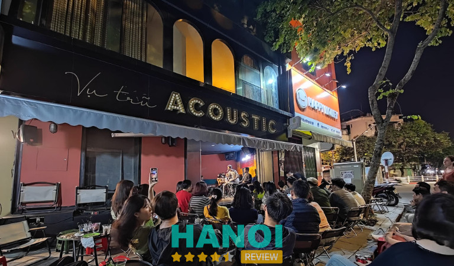
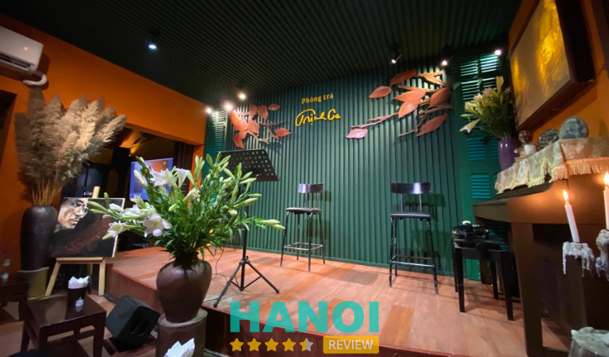
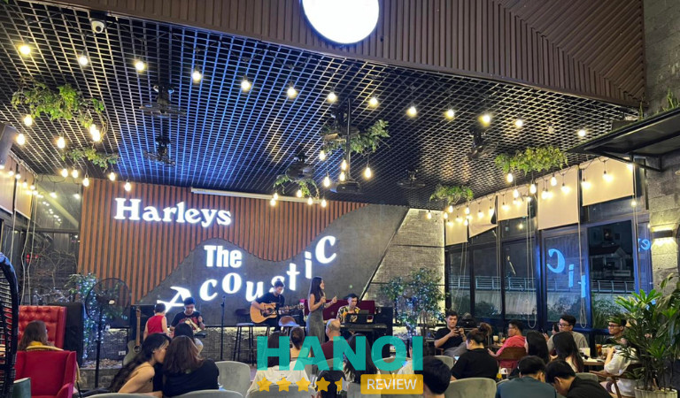
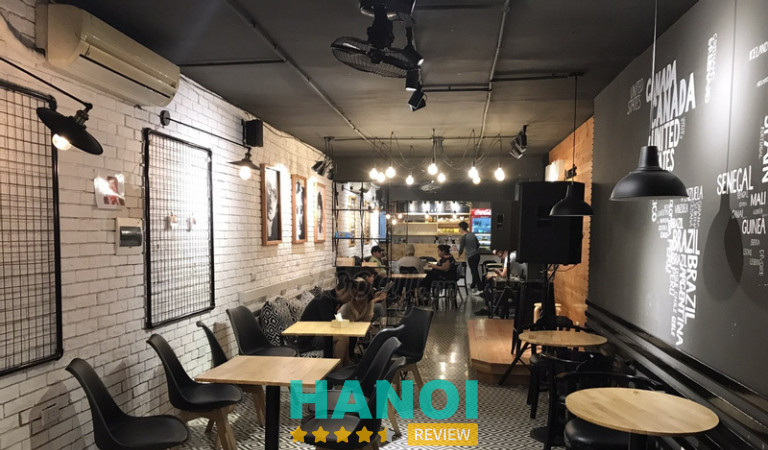
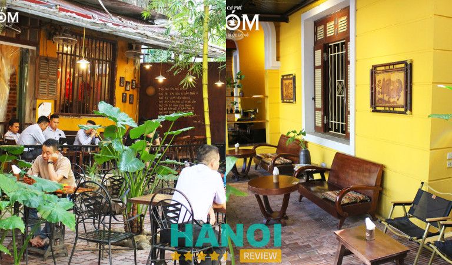

10 Quán cafe Acoustic tại Hà Nội nhạc cực chill, view siêu đẹp
Các quán cafe Acoustic tại Hà Nội là điểm đến yêu thích của nhiều người dân địa phương và khách du lịch hiện nay. Bởi khi đến đây, thực khách không chỉ thưởng thức những loại thức uống ngon mà đặc biệt còn lắng mình trong những giai điệu âm nhạc cực chill để thư giãn sau những ngày dài mệt mỏi.
Top 10 quán cafe Acoustic tại Hà Nội nổi tiếng
Quán cà phê Acoustic hiện đang là một xu hướng mới thu hút sự quan tâm của nhiều người. Khi tới đây, bạn có thể cùng bạn bè hoặc gia đình vừa tán ngẫu, thưởng thức nước uống ngon, ngắm phong cảnh đẹp và đặc biệt là được nghe những bản nhạc bất hủ của các ca sĩ.
Nếu bạn đang ở thủ đô và muốn tìm một nơi như vậy thì hãy để HaNoiReview giúp bạn tìm kiếm những quán cafe Acoustic nổi tiếng nhất nhì Hà Thành.
Ấy Lounge
Ấy Lounge là một trong những cửa hàng tiên phong ở Hà Nội khi tổ chức quán coffee theo mô hình tổng hợp, có sự kết hợp của âm nhạc. Chính vì vậy, không quá ngạc nhiên về việc thu hút đông đảo thực khách đến với quán.
Quán nằm ở khu vực tầng 2 với không gian rộng rãi có sức chứa lên đến 200 người. Bên cạnh đó, vì quán chủ yếu hoạt động vào buổi tối nên phong cách trang trí ở đây cũng cực chill. Nếu bạn thích không gian đậm chất bar nhưng muốn thưởng thức những bữa tiệc âm nhạc sâu lắng, không quá sôi động thì nơi đây chính là lựa chọn tuyệt vời dành cho bạn.

Ấy Lounge rất thích hợp để cùng bạn bè họp mặt trò chuyện, nhâm nhi một chút nước uống và thả mình vào những bản nhạc hay. Về đồ uống ở quán rất đa dạng và phong phú. Điển hình như: cocktail, soda, mocktail, ice blended, rượu ngọt, trà hoa quả,…
Tùy vào loại thức uống và các dịch vụ đi kèm mà sẽ có nhiều mức giá nhau. Trung bình, giá thành ở quán đắt hơn so với nhiều quán khác, từ 200 – 500 nghìn đồng/ người. Tuy nhiên, khi đến đây đảm bảo bạn sẽ được phục vụ một cách chu đáo nhất.
Không chỉ có những buổi live nhạc sống vào mỗi tối hàng tuổi của các ca sĩ chuyên nghiệp. Ấy Lounge còn thường xuyên để chức các buổi minishow cho nhiều ca sĩ nổi tiếng để mang đến cho khách hàng những buổi tiệc âm nhạc chất lượng.
Thông tin liên hệ:
- Địa chỉ: 65 Hàng Bún, Quận Ba Đình, Hà Nội
- Điện thoại: 0942 226 363
- Fanpage: FB.com/aycafe
Xem thêm: 5 Dịch vụ gói quà Tết tại Hà Nội uy tín, chất lượng hàng đầu
Tranquil. Books & Coffee
Tranquil Books & Coffee cũng là quán cafe acoustic nổi tiếng ở Hà Nội. Quán cà phê này rất thích hợp cho những ai thích không gian yên tĩnh, lãng mạng để thư giãn.
Quán có 2 tầng với không gian nhỏ nhắn, yên tĩnh và kín đáo. Do đó, bạn có thể ngồi ở bên trong nhà của 2 tầng và ngoài trời. Nơi đây là địa điểm lý tưởng để bạn thư giãn hoặc tập trung học tập, làm việc và ngắm nhìn phố thị Hà Thành.

Khi đến đây, bạn có thể tự lựa chọn chỗ ngồi hoặc nhờ nhân viên sắp xếp giúp mình. Các bạn nhân viên ở quán đều rất nhiệt tình và thân thiện với khách. Chắc chắn sẽ khiến bạn hài lòng về chất lượng dịch vụ.
Đồ uống ở quán cũng tương đồng với nhiều nơi khác. Tuy nhiên, điểm đặc biệt của Tranquil Books & Coffee chính là sự cầu toàn và tỉ mỉ khâu trang trí đồ uống. Vì vậy, mỗi ly nước uống do quán làm ra đều vô cùng đẹp mắt, khách hàng có thể thoải mái checkin sống ảo.
Ngoài những loại đồ uống, quán còn có các món bánh ăn nhẹ như bánh sừng bò, bánh kem,… cũng rất ngon.
Đồ uống ngon, phong cách phục vụ chuyên nghiệp, không gian đẹp, giá thành phải chăng là những đánh giá của khách hàng đã từng đến đây. Do đó, Tranquil Books & Coffee là quán cafe rất xứng đáng để bạn trải nghiệm.
Thông tin liên hệ:
- Địa chỉ: 5 Nguyễn Quang Bích, P. Cửa Đông, Quận Hoàn Kiếm, Hà Nội
- Điện thoại: 0395 049 075
- Email: cafetranquil@gmail.com
- Fanpage: FB.com/cafetranquil
Trixie Cafe & Lounge
Trixie Cafe & Lounge nằm trong một tòa nhà ngay trên đường Thái Hà thuộc khu vực trung tâm của thủ đô nên rất dễ để bạn tìm được. Quán được đánh giá là một trong những phòng trà lớn nhất khu vực Hà Thành hiện nay. Với toà nhà cao tầng cùng 3 hầm để xe vô cùng rộng rãi và thuận tiện cho việc di chuyển đi lại.
Đặc biệt, trong suốt 6 năm hoạt động, đơn vị đã mang đến cho khán giá hàng nghìn buổi minishow âm nhạc lớn nhỏ có sự góp mặt của hàng loạt các ca sĩ nổi tiếng trong giới showbiz. Tùy vào mức độ nổi tiếng của ca sĩ mà giá dịch vụ cũng sẽ khác nhau.
Khi đến với Trixie Cafe & Lounge, ngoài coffee bạn còn có thể order một số loại thức uống nổi bật khác như rượu vàng, nước ép hoa quả, cocktail,… Giá các loại đồ uống ở đây sẽ từ 150 nghìn đồng trở lên.
Bên cạnh đồ uống, quán còn cung cấp thêm một số đồ ăn khác để phục vụ tối đa nhu cầu của mọi khách hàng. Đảm bảo bạn sẽ không phải hối hận khi lựa chọn quán.
Thông tin liên hệ:
- Địa chỉ: 165 Thái Hà, Láng Hạ, Quận Đống Đa, Hà Nội
- Điện thoại: 0977 165 165
- Website: trixie.com.vn
- Fanpage: FB.com/trixie.cafe.lounge
Xem thêm: 10 Quán nướng quận Cầu Giấy ngon nức tiếng, giá cả phải chăng
Serein Cafe & Lounge
Serein Cafe & Lounge nằm tại tầng 3 và tầng 4 của một tòa biệt thự cổ kiểu Pháp, thuộc khu tập thể trên đường Trần Nhật Duật, Long Biên. Thế mạnh của Serein đó là có view ngắm cầu Long Biên và chụp ảnh cực kỳ đẹp. Ngoài ra, khách còn có thể thưởng thức âm nhạc Acoustic với những giai điệu lôi cuốn ở bên trong quán.
Không gian quán có lối kiến trúc phương Tây tạo cảm giác như bạn đang ở một địa điểm coffee shop ngay tại Paris. Vì là tòa nhà cổ nên không gian bên trong có phần nét cũ kĩ, ma mị. Bên cạnh đó, quán còn decor thêm nhiều bộ bàn ghế và các món đồ khác theo phong cách cổ điển cũng tạo nên những khoảng không gian triệu view để thực khách thoải mái chụp ảnh sống ảo.
Bảng thực đơn đồ uống ở Serein Cafe & Lounge cũng rất đa dạng và được trang trí rất đẹp mắt. Trong đó, món loại nước uống từ cà phê truyền thống Việt Nam đến những món cà phê được pha máy của nước Ý luôn được thực khách đáng giá cao. Trung bình, giá một ly nước ở đây sẽ dao động từ 50 – 150 nghìn đồng.
Ngoài sở hữu view ngắm cảnh cực đỉnh, quán còn được nhiều khách quan tâm và ủng hộ bởi luôn mang đến chế độ phục vụ tốt, với đội ngũ nhân viên nhiệt tình, tận tâm. Sẵn sàng phục vụ nước uống một cách nhanh nhất và chu đáo.
Thông tin liên hệ:
- Địa chỉ: 16 Trần Nhật Duật, Quận Hoàn Kiếm, Hà Nội
- Điện thoại: 0904 176 146
- Email: Sereincafe.lounge@gmail.com
- Fanpage: FB.com/SereinCafeLounge
Cà Phê Không
Cà Phê Không sẽ là một trong những địa chỉ dành cho hội những người thích giao lưu âm nhạc và dùng nó để thư giãn, giảm căng thẳng stress. Bởi khi đến đây, bạn không chỉ có thể nghe các ca sĩ nổi tiếng hát mà còn có thể đăng đý để tự thể hiện giọng hát của mình.
Quán có không gian khá nhỏ vì nằm trong khu nhà tập thể. Tuy nhiên, nhờ kết cấu thiết kế và phong cách trang trí đã góp phần tạo cho khách hàng một cảm giác hoàn toàn thoải mái và dễ chịu. Ban ngày, quán ngập tràn các luồng ánh sáng tự nhiên tuyệt đẹp, rất thích hợp để làm việc và học tập.

Khi về đêm, bạn có thể ghé đến đây để thưởng thức những bữa tiệc nhạc linh đình với những âm thanh của giọng hát, tiếng đàn được hòa nhịp rất sống động và bắt tai.
Ở quán Cà Phê Không hiện tại có một số món được nhiều khách hàng order phải kể đến như: chocolate kem trứng, hồng trà, chocolate phô mai, trà đào cam sả… rất thơm ngon và mát lạnh.
Thông tin liên hệ:
- Địa chỉ: 103 D9 Ngõ 63 Thái Thịnh, Quận Đống Đa, Hà Nội
- Điện thoại: 0912 065 537
- Fanpage: FB.com/caphekhong.vn
Xem thêm: 10 Tiệm cắt tóc nam tại Hà Nội đẹp, phong cách, được yêu thích
Acoustic Cafe 236 Hàng Bông
Acoustic Cafe 236 Hàng Bông luôn là địa chỉ ưu tiên của nhiều bạn trẻ Hà Thành. Không giống như những quán cà phê sang trọng khác, nơi đây mang đến cho thực khách một cảm giác vô cùng gần gũi, ấm cúng nhờ có không gian mở, thoáng mát, đậm chất đường phố.
Ban ngày, quán vẫn hoạt động theo mô hình coffee shop thông thường và âm nhạc acoustic sẽ bắt đầu vào lúc 20h30 mỗi tối. Âm nhạc ở đây cực kỳ chất lượng, các nghệ sĩ ở quán đều là người có kinh nghiệm nhiều năm và giọng hát thiên phú sẽ mang đến những gia điệu du dương cực cuốn để quý khách thưởng thức.

Bên cạnh việc thưởng thức âm nhạc, bạn cũng có thể dùng thử các loại đồ uống ở đây. Menu của quán khá đa dạng, chắc chắn có thể chiều theo những sở thích của từng khách hàng.
Ngoài ra, chủ quán và đội ngũ nhân viên phục vụ ở đây đều rất dễ thương, hòa đồng. Trong nhiều năm hoạt động, quán chưa từng bị khách hàng phàn nàn về thái độ phục vụ. Chính vì vậy, Acoustic Cafe 236 Hàng Bông hứa hẹn sẽ là nơi khiến bạn hài lòng tuyệt đối.
Thông tin liên hệ:
- Địa chỉ: 236 Hàng Bông, Cửa Nam, Quận Hoàng Kiếm, Hà Nội
- Điện thoại: 0934 542 089
- Fanpage: FB.com/acoustic236hangbong
Phòng Trà Trịnh Ca
Một sự lựa chọn khác dành cho những thực khách ở lứa tuổi trung – cao niên hoặc những gia đình có niềm yêu mến với dòng nhạc trữ tình đậm chất Việt đó chính là Phòng Trà Trịnh Ca. Nơi đây là tiệm cafe Acoustic nổi tiếng nhất nhì ở thủ đô Hà Nội.
Đúng với cái tên của quán, phong cách thiết kế tiệm cũng mang hơi hướng xưa cũ, đơn sơ và mộc mạc. Các bộ bàn ghế thấp bằng mây tre hoặc gỗ điểm xuyến thêm vài bình hoa sen, trên tường có những bức tranh nổi tiếng vẽ về nhạc sĩ Trịnh Công Sơn và các bức thư pháp tuyệt phẩm đã tạo nên một không gian cực chill để thực khách vừa thưởng thức trà và âm nhạc.

Các buổi acoustic của quán có sự kết hợp giữu guitar và nhạc sống, mang đến một phong cách âm nhạc rất riêng thu hút được nhiều sự quan tâm của những người thích nhạc Trịnh. Các ca sĩ ở đây đều rất chuyên nghiệp và giọng hát hay với phong thái biểu diễn đậm chất nhạc Trịnh Công Sơn.
Bên cạnh âm nhạc, các món đồ uống độc đáo ở đây cũng sẽ khiến nhiều thực khách ấn tượng. Bởi từng loại đồ uống đều có một cái tên rất riêng, cực chất như: Tình Sầu, Mưa Hồng, Cà phê vô thường, Gọi tên bốn mùa, Mocktail Biển Nhờ, Năngs Thủy Tinh, Diễm Xưa, Thu Phai,…
Điểm hạn chế duy nhất ở quán đó là đông khách vào những ngày cuối tuần. Chính vì vậy, để đảm bảo có thể thưởng thức những bữa tiệc nhạc Trịnh, bạn hãy liên hệ trước cho quán để đặt bàn, tránh tình trạng bị hết chỗ, khuất tầm nhìn.
Thông tin liên hệ:
- Địa chỉ: Ngõ 233 Tô Hiệu, Quận Cầu Giấy, Hà Nội
- Điện thoại: 0963 430 023
- Email: trinhcahanoi@gmail.com
- Fanpage: FB.com/PhongtraTrinhCa
Xem thêm: 10 Shop bán bikini tại Hà Nội đẹp, sang chảnh, nhiều mẫu mã
Harleys Coffee
Harleys Coffee là địa chỉ không nên bỏ lỡ khi nhắc đến những quán cafe Acoustic có view xịn ở Hà Nội. Bởi quán có không gian rộng rãi, thoáng mát. Đặc biệt, Harleys Coffee rất thích hợp để thực khách cùng gia đình, bạn bè đến thư giãn vào buổi tối. Với mặt bằng xịn sò, có view ban công có thể ngắm nhìn các cung đường xinh xắn của Hà Nội.
Bên trong quán cũng được decor theo phong cách tối giản và hiện đại. Các chùm đèn được lắp đặt trên trần nhà còn tạo hiệu ứng ánh sáng vô cùng lung linh, rất thích hợp để thực khách check in sống ảo.

Về menu đồ uống ở quán rất phong phú, đa dạng. Từng loại đồ uống đều được các nhân viên pha chế trang trí tỉ mỉ đến từng chi tiết nhỏ. Do đó, thức uống ở Harleys The Acoustic không chỉ ngon, chất lượng mà còn đẹp về mặt hình thức.
Quán phục vụ nhiều phong cách âm nhạc khác nhau. Nơi đây được khách hàng đánh giá có chất lượng âm nhạc tương đối ổn. Ngoài ra, thực khách còn có thể order bài hát theo yêu cầu riêng.
Thông tin liên hệ:
- Địa chỉ: 337 Cầu Giấy, Dịch Vọng, Quận Cầu Giấy, Hà Nội
- Điện thoại: 0865 815 510
- Fanpage: FB.com/harleyscoffe
KuKu Acoustic
KuKu Acoustic là quán cà phê theo phong cách hiện đại theo hơi hướng tối giản. Mặc dù có diện tích khá nhỏ, tuy nhiên quán luôn biết cách decor và bố trí hợp lý tạo nên không gian ấm cúng và cũng rất thoải mái cho thực khách.
Thực đơn nước uống và đồ ăn nhẹ ở quán cũng khá phong phú, đa dạng. Trong đó, các loại bánh ngọt ở đây là món được đông đảo thực khách đánh giá cao.

Bên cạnh đó, đội ngũ nhân viên ở quán KuKu Acoustic đều đã được đào tạo bài bản về quy trình phục vụ. Đảm bảo bạn sẽ được trải nghiệm những dịch vụ chuyên nghiệp nhất.
Vào các buổi tối trong tuần, quán đều tổ chức các buổi chơi nhạc cực kỳ đã tai với những band nhạc piano, guitar giàu kinh nghiệm và có khiếu âm nhạc. Chắc chắn sẽ khiến bạn không phải thất vọng.
Thông tin liên hệ:
- Địa chỉ: A7 Ng. 1A P. Tôn Thất Tùng, Kim Liên, Quận Đống Đa, Hà Nội
- Điện thoại: 0918 418 866
- Fanpage: FB.com/KuKuAcousticCafe
Xem thêm: 5 Địa chỉ ăn gà tần tại Hà Nội giá tốt, thơm ngon khó cưỡng
Xóm Cà Phê
Xóm Cà Phê là địa điểm cuối cùng mà bài viết muốn giới thiệu đến quý bạn đọc. Quán có không gian đậm nét Hà Nội cổ xưa. Từ ngoài cổng đi vào, bạn sẽ cảm nhận ngay bầu trời ký ức tuổi thơ ùa về với những khóm trúc, bụi sen xanh mướt, gian nhà mái ngói có khung cửa gỗ và bức tường vàng đặc trưng.
Ngoài ra, toàn bộ vật dụng được sử dụng trong quán từ bàn ghế, ly chén, đèn thắp sáng, tranh treo tường, tivi đều được decor theo phong cách của những năm thập niên 90 mang cảm giác hoài niệm khó tả.

Quán có nhiều khu vực để thực khách có thể vừa thưởng thức đồ uống và nghe nhạc từ trong nhà đến sân vườn.
Đồ uống ở đây cũng được tối giản với những món đặc trưng của người Việt. Giá từng thức uống sẽ dao động từ 30 – 50 nghìn đồng. Đây là mức giá khá bình dân so với mặt bằng chung.
Không chỉ thể, các bạn nhân viên ở Xóm Cà Phê cũng rất nhiệt tình, thân thiện và niềm nở với khách. Do đó, nếu vào những ngày cuối tuần mà bạn không biết nên đi đâu đề chill và xả stress thì có thể ghé đến đây để trải nghiệm.
Thông tin liên hệ:
- Địa chỉ: N6E KĐT, Trung Hòa Nhân Chính, Quận Thanh Xuân, Hà Nội
- Điện thoại: 0243 555 3456
- Fanpage: FB.com/xomcaphehn
6 Kinh nghiệm lựa chọn quán cafe Acoustic chất lượng
Các quán Cafe Acoustic là điểm đến yêu thích của nhiều người có niềm đam mê với âm nhạc và muốn thư giãn sau những ngày làm việc căng thẳng. Tuy nhiên, nếu lựa chọn phải những quán kém chất lượng, có phong cách phục vụ không chuyên nghiệp sẽ khiến bạn có những trải nghiệm và ấn tượng không tốt. Vì vậy, hãy tham khảo một vài kinh nghiệm sau để lựa chọn được quán phù hợp.
- Vị trí thuận lợi: Việc lựa chọn vị trí của quán luôn là điều đầu tiên mà mọi người quan tâm. Bạn hãy ưu tiên lựa chọn những quán có đường đi thuận tiện, không nằm quá sâu trong ngõ ngách hoặc xa trung tâm thành phố. Điều này sẽ giúp bạn không tồn công sức và thời gian di chuyển.
- Không gian quán: Hiện nay, các quán có lối thiết kế khá đa dạng từ cổ điển truyền thống đến hại đại. Tùy vào sở thích và nhu cầu của bạn mà lựa chọn nơi phù hợp. Tuy nhiên, bạn cần hạn chế lựa chọn những quán có không gian quá nhỏ hoặc đông đúc. Nên lựa chọn những quán rộng rãi, thoáng mát và có view đẹp để thăng hoa cảm xúc hơn.
- Tham khảo đánh giá của khách hàng: Trước khi lựa chọn đến quán cafe nào, bạn cũng cần tìm hiểu thêm những đánh giá về quán của các khách hàng từng trải nghiệm thông qua các trang mạng xã hội để có cái nhìn bao quát nhất.
- Đồ uống đa dạng: Nên lựa chọn những quán có thực đơn nước uống đa dạng để có nhiều hơn sự chọn lựa cho chính mình, bạn bè và gia đình đi cùng.
- Thời gian có nhạc acoustic: Mỗi quán sẽ có khung giờ chơi nhạc acoustic khác nhau. Chính vì vậy, để buổi đi cafe của bạn được trọn vẹn bạn nên tìm hiểu hoặc liên hệ với quán để xác định trước thời gian. Tránh việc đến nhưng lại không có các buổi tiệc nhạc để bạn thưởng thức.
- Giá cả hợp lý: Cuối cùng là hãy so sánh giá thành của nhiều quán để đưa ra quyết định phù hợp. Đừng chọn đại một quán nào đó có giá thành cao, bởi không phải tiệm nào cũng cung cấp dịch vụ xứng đáng với số tiền bạn bỏ ra.
Bài viết trên đã tổng hợp danh sách 10 quán cafe Acoustic tại Hà Nội có view cực đỉnh, nhạc hay và thu hút đông đảo thực khách ghé đến. Hy vọng từ những gợi ý trên, bạn có thể tìm được một địa điểm ưng ý để trải nghiệm.
Có thể bạn quan tâm
- 10 Nhà hàng sushi tại Hà Nội ngon, được nhiều tín đồ ưa chuộng
- 10 Quán ăn tại quận Tây Hồ ngon nổi tiếng, nhiều người yêu thích
- 5 Địa chỉ sửa máy hút ẩm tại Hà Nội nhanh chóng, đáng tin cậy
- 5 Shop custom giày tại Hà Nội chuyên nghiệp, dịch vụ tốt nhất
DOANH NGHIỆP: Đăng tải thông tin MIỄN PHÍ.
Tin đọc nhiều


10 Quán bún đậu mắm tôm tại Hà Nội chuẩn vị, ngon khó cưỡng
Những quán bún đậu mắm tôm tại Hà Nội từ lâu luôn thu hút nhiều sự quan tâm của người dân và các thực khách...

10 Quán ăn tại quận Tây Hồ ngon nổi tiếng, nhiều người yêu thích
Quận Tây Hồ, với vẻ đẹp hữu tình bên bờ Hồ Tây lấp lánh, không chỉ là điểm đến lý tưởng cho những buổi dạo...
10 Hàng xôi tại Hà Nội vị Bắc đặc trưng, thơm ngon trứ danh
Các hàng xôi tại Hà Nội không chỉ gây thương nhớ với hương vị Bắc đặc trưng mà còn có giá thành phải chăng nên...
7 Quán bar ở Hai Bà Trưng nổi tiếng, phục vụ tận tình
Nếu bạn đang tìm những quán bar ở Hai Bà Trưng có không gian đẹp, phục vụ tận tình và đồ uống chất lượng, đây...

Trở thành người đầu tiên bình luận cho bài viết này!